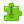

重要
翻訳は あなたが参加できる コミュニティの取り組みです。このページは現在 100.00% 翻訳されています。
29.1. QGISプラグイン
QGISは、プラグインアーキテクチャで設計されています。これは、多くの新機能や機能を簡単にアプリケーションに追加することを可能にします。実際にQGISの機能のいくつかはプラグインとして実装されています。
29.1.1. コアプラグインと外部プラグイン
QGIS プラグインは コア・プラグイン または 外部プラグイン として実装されます。
コア・プラグイン はQGIS開発チームによって維持管理され、自動的にすべてのQGISディストリビューションの一部になっています。それらは C++ と Python という２つの言語の、いずれかで書かれています。
外部プラグインのほとんどは、現在Pythonで書かれています。これらは、https://plugins.qgis.org/plugins/ の「公式」QGISリポジトリ、または外部リポジトリに保存され、個々の作者によって管理されています。公式リポジトリにあるプラグインについては、使用方法、QGISの最小バージョン、ホームページ、作者、その他の重要な情報についての詳細な文書が提供されています。その他の外部リポジトリについては、外部プラグイン自体にドキュメントが用意されている場合があります。外部プラグインのドキュメントは、本マニュアルには含まれていません。
プラグインをインストールまたは有効化するには、 メニューから  を選択してください。インストールされた外部Pythonプラグインは、アクティブな user profile パスの
を選択してください。インストールされた外部Pythonプラグインは、アクティブな user profile パスの python/plugins フォルダの下に配置されます。
カスタムC ++のプラグインライブラリへのパスも 下に追加できます。
29.1.2. プラグインダイアログ
29.1.2.1. [設定]タブ
左パネルの下部にある  設定 タブは、アプリケーションで表示できるプラグインを設定する主な場所です。以下のオプションを使用することができます:
設定 タブは、アプリケーションで表示できるプラグインを設定する主な場所です。以下のオプションを使用することができます:
 起動時に更新を確認する。インストールされているプラグインにアップデートがある場合、QGISは QGIS 起動時、1日1回, 3日に1回, 毎週、 2週間毎 または 毎月 に通知します。
起動時に更新を確認する。インストールされているプラグインにアップデートがある場合、QGISは QGIS 起動時、1日1回, 3日に1回, 毎週、 2週間毎 または 毎月 に通知します。- 実験的プラグインも表示。QGISでは、一般的に実運用には適さない開発初期段階のプラグインを表示します。これらのプラグインについては、安定版と実験版のどちらかをインストールし、いつでも切り替えることができます。
- 非推奨プラグインも表示。これらのプラグインは、QGISの機能を代替している、メンテナが不足している、QGISで利用できなくなった機能に依存している...などの理由から、通常メンテナンスされていません。これらのプラグインは一般的に実運用には適さず、プラグインリストでは灰色で表示されます。
デフォルトでは、プラグインリボジトリ セクションで、QGISはURL https://plugins.qgis.org/plugins/plugins.xml?qgis=version （ここで <version> はあなたが実行している正確なQGISバージョンを示します）を持つ公式プラグインリポジトリを提供します。外部の作者のリポジトリを追加するには、  追加... をクリックし、 リポジトリの詳細 フォームに名前と URL を入力します。URLは
追加... をクリックし、 リポジトリの詳細 フォームに名前と URL を入力します。URLは http:// または file:// プロトコルタイプになります。
デフォルトのQGISリポジトリはオープンなリポジトリで、アクセスするための認証は必要ありません。ただし、独自のプラグインリポジトリを展開して認証（基本認証、PKI）を必要にすることができます。 QGIS認証のサポートに関する詳細は 認証 の章を参照してください。
追加されたリポジトリのうち1つ以上が不要な場合は、設定タブから  編集... ボタンを使って無効にしたり、
編集... ボタンを使って無効にしたり、  削除 ボタンを使って完全に削除することができます。
削除 ボタンを使って完全に削除することができます。
図 29.1 設定 タブ
29.1.2.2. プラグインを眺める
タブ
プラグイン ダイアログの上部のタブは、インストール、作成、更新のステータスに基づいたプラグインのリストを提供します。プラグインの設定により、利用可能なタブは以下の通りです:
- すべて: 有効なリポジトリにある利用可能なすべてのプラグインを表示します
 インストール済: インストールしたプラグインと、デフォルトでインストールされアンインストールできないコアプラグインの両方を表示します
インストール済: インストールしたプラグインと、デフォルトでインストールされアンインストールできないコアプラグインの両方を表示します 未インストール: 有効なリポジトリにある、アンインストールまたは未だインストールされていないプラグインを表示します
未インストール: 有効なリポジトリにある、アンインストールまたは未だインストールされていないプラグインを表示します アップグレード可能: インストールされているプラグインのうち、リポジトリでより新しいバージョンを公開しているものを表示します
アップグレード可能: インストールされているプラグインのうち、リポジトリでより新しいバージョンを公開しているものを表示します Invalid: インストールされているプラグインのうち、何らかの理由で現在壊れているもの（依存関係がない、読み込み中にエラーが出る、QGISバージョンと互換性のない機能...）をすべて表示します
Invalid: インストールされているプラグインのうち、何らかの理由で現在壊れているもの（依存関係がない、読み込み中にエラーが出る、QGISバージョンと互換性のない機能...）をすべて表示します
{kind=link}
タブの上部には 検索 機能があり、メタデータ情報（作者、名前、説明、タグ、...）から任意のプラグインを探すことができます。
図 29.2 すべて タブからプラグインを検索する
プラグイン
プラグインを選択すると、右のパネルにいくつかのメタデータが表示されます:
プラグインが実験的であるか、実験版が利用可能であるかについての情報（ 実験的プラグインも表示 がチェックされている場合）
サマリと説明
評価投票（お好みのプラグインに投票できます！）
tags
ホームページ、トラッカーやコードリポジトリにはいくつかの便利なリンク
作者
利用可能なバージョンと、リポジトリ内のダウンロードページへのリンク、またはインストールされたプラグインのローカルフォルダへのパス
プラグインマネージャ ダイアログでは、最新バージョンのプラグインを操作することができます。有効にすると、実験版は、最新の安定版よりも新しい場合にのみ表示されます。アクティブなタブに応じて、選択したプラグインがインストールされているかどうか、以下のオプションのいくつかが表示されます:
インストール: 選択したプラグインの最新の安定版をインストールします
実験的なプラグインをインストール: 選択したプラグインの実験版をインストールします
再インストール: 同じ安定したバージョンのプラグインをインストールします 例: ロードに失敗した後
実験的なプラグインを再インストール: 同じ安定版のプラグインをインストールします 例: ロードに失敗した後
プラグインをアップグレード: 選択したプラグインを最新の安定版にアップグレードします
実験的なプラグインをアップグレード: 選択したプラグインを実験版にアップグレードします
すべてアップグレード: インストールされているすべてのプラグインを、より新しい安定版または実験版にアップグレードします（以前にインストールされていたバージョンが安定版か実験版かによって異なります）。
Downgrade Plugin: プラグインの実験版から、以前の安定版に移行します
Downgrade Experimental Plugin: プラグインの実験版から、その最新の公開済みの実験版に移動します。これは、まだ公開されていないバージョンで遊んでいるときに発生する可能性があります。
アンインストール: インストールされたプラグインをユーザープロファイルから削除します
インストールされたプラグインは、その左側に チェックボックスが表示されます。チェックを外すと、一時的にプラグインを停止することができます。
リスト内のプラグインを右クリックすると、プラグインリストを様々なメタデータでソートできるようになります。新しい順序は、すべてのタブに適用されます。ソートオプションは以下の通りです:
名前で並び替え
ダウンロード数で並べ替え
投票数で並べ替え
状態で並べ替え
作成日時で並べ替え
更新日時で並べ替え
29.1.2.3. ZIPからインストールタブ
 ZIPからインストール タブは、リポジトリから直接ダウンロードしたプラグインなど、zip形式のプラグインをインポートするためのファイルセレクタウィジェットを提供します。暗号化されたファイルもサポートされています。
{kind=link}

図 29.3 installPluginFromZip|:guilabel:zipからインストール タブ